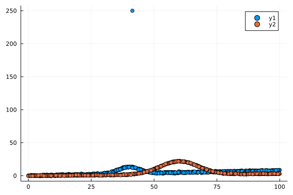
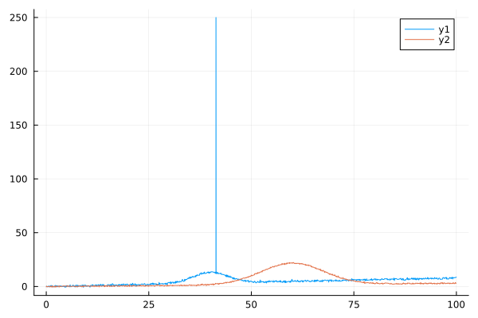
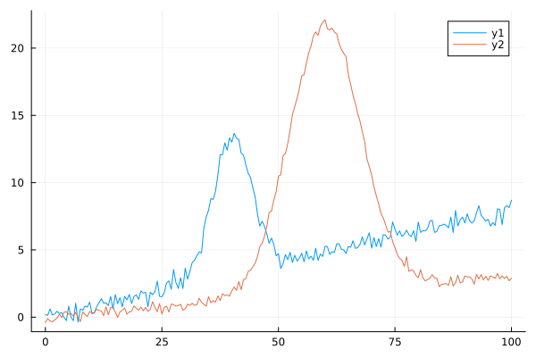
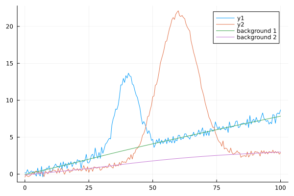
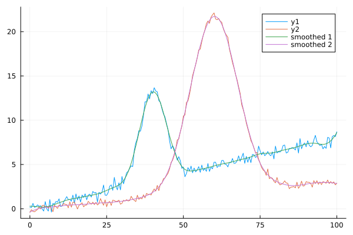

Data Processing
Introduction
Spectra allows you to perform several processing steps on x-y spectral data. Below we will showcase short examples, and then you will find the documentation of the variosu functions you may want to use!
As a starting point and for the sack of example, we create two synthetic signals to play with. They will be Gaussian signals randomly sampled along two different X axis, with noise and increasing backgrounds. One of them will also have a strong spike!
# Signal creation
using Spectra, Plots
# we create a fake signal with
x_1 = rand(1000)*100
x_2 = rand(1000)*100
# create a signal that is the combination of two gaussian peaks plus a background
background_1 = 0.08 * x_1
background_2 = 0.03 * x_2
# some noise
noise_1 = 0.5*randn(1000)
noise_2 = 0.3*randn(1000)
# the full toy signals
y_1 = gaussian(x_1, 10.0, 40., 5.) .+ background_1 .+ noise_1
y_2 = gaussian(x_2, 20.0, 60., 9.) .+ background_2 .+ noise_2
# one of them will have a spike!
y_1[600] = 250.0
# make a plot of our two spectra
scatter(x_1, y_1)
scatter!(x_2, y_2)
We can do the following steps (not necessarily in this order):
correct_xshiftallows correcting X-axis shifts of your spectra from a reference value (e.g. silicon wafer reference in Raman spectroscopy).nm_to_invcmorinvcm_to_nmconvert the X axis between nanometers (nm) and wavenumbers (cm$^{-1}$).flipspsort the X-axis (this is necessary for some algorithms).resampleallows getting our spectra on the same X axis for convenience.despikingremove spikes in the signal.baselineallows removing the background.smoothallows smoothing signals.tlcorrectioncorrects Raman spectra for temperature and laser wavelength effects.normaliseallows normalising the spectra.extract_signalcan extract specific portions of a signal.
Thanks to Julia's multiple dispatch, those functions support different types of inputs. Of course you will receive different outputs, see the individual documentation of each function for further details. This is quite convenient as this avoid you to write your own loops to process many spectra at once.
Let's now use some of those functions below on the signal generated above.
Sort X Axis
We can sort the data by passing an array of spectra to flipsp. After that we should have not problem plotting things with lines for instance!
spectrum_1 = flipsp([x_1 y_1])
spectrum_2 = flipsp([x_2 y_2])
plot(spectrum_1[:,1], spectrum_1[:, 2])
plot!(spectrum_2[:,1], spectrum_2[:, 2])
Remove spikes
OK, the plot above reveals a strong spike in one of the signals. We will treat actually both signals with despiking to remove possible spikes from the signals, using the default parameters. In summary, with the default settings, despiking checks if any points in a spectrum differ by more than 3 sigma from the mean value of the 4 neighboring points. You can change the default values to adjust the threshold (for more or less than 3-sigma), or to modify the number of neighboring points considered.
y_1 = despiking(x_1, y_1)
y_2 = despiking(x_2, y_2)1000-element Vector{Float64}:
0.18817811184926136
2.825728859381716
18.90814929798047
5.552506574951748
0.5404993688493123
7.659309584346769
2.1166773445622216
-0.24237392463827892
6.111709327837205
2.0343588470916356
⋮
0.3826958219865128
1.1071294178761881
0.3390395700211149
0.6241420175657777
14.268809220590922
1.4067235017257023
17.99350749200591
0.9379340582981646
0.5396373580960956You could also call despiking on the collection of spectra as
collection_spectra = [[x_1 y_1], [x_2 y_2]]
ys = despiking(collection_spectra)Resample spectra
Using resample, we can resample a spectrum or spectra on a user-defined X axis by calling
x_new = collect(0.:0.5:100)
y_new = resample(x, y, x_new)By default, resample uses a linear interpolation method from the DataInterpolations.jl package, but you can specify other methods available at https://docs.sciml.ai/DataInterpolations/stable/methods/.
If you have multiple spectra, it is here very interesting to provide a collection of those spectra because you will then receive an array of spectra in output, all sampled on the same X axis.
Continuing on the example shown above, we can do:
x_new = collect(0.:0.5:100)
spectra_ = [[x_1 y_1], [x_2 y_2]]
spectra_same_x = resample(spectra_, x_new)
plot(x_new, spectra_same_x)
Baseline subtraction
Baseline subtraction is performed using baseline, which serves as the main API and wraps several dedicated baseline correction algorithms. Similarly to the other functions, you can pass x and y vectors or a x vectors and an array of y spectra.
Continuing with our example, we will do here:
ys_corrected, ys_baselines = baseline(x_new, spectra_same_x, method="arPLS")
p1 = plot(x_new, spectra_same_x)
plot!(x_new, ys_baselines, labels=["background 1" "background 2"])
Other methods are available, see the Tutorials and baseline function documentation for further details!
Smoothing
Spectra smoothing can be achieved with the smooth function, which supports several algorithms:
- Whittaker smoother: Custom Julia implementation based on the Matlab code of Eiler (2003). It supports both equally and unequally spaced X values.
- Savitzky-Golay Smoother: Provided by the SavitskyGolay.jl library.
- GCV cubic spline smoother: From the DataInterpolations.jl library.
- Window-based smoothers: leverage the DSP.jl library.
For fine control over smoothing parameters, you can use the whittaker function directly, allowing you to change weights w or the smoothing order d (also possible in smooth).
Continuing with our example, we will pass the matrix of baseline corrected signals to smooth like:
smoothed_y = smooth(x_new, spectra_same_x; method="gcvspline")
p1 = plot(x_new, spectra_same_x)
plot!(x_new, smoothed_y, labels=["smoothed 1" "smoothed 2"])
Other methods are available, see the Tutorials and smooth function documentation for further details!
Signal normalisation
Using normalise, you can normalise signals to their maximum intensity (method="intensity"), the area under the curve (method="area") or to their minimum and maximum values (minimum will be set to 0, maximum to 1) (method="minmax").
For instance, continuing with our example, we can do:
normalised_ys = normalise(spectra_same_x, method="intensity")
p1 = plot(x_new, normalised_ys)If you want to normalize the signals by their areas, you have to pass x values too, like:
normalised_y = normalise(y_matrix, x, method="intensity")Signal extraction
Extract signals in specific regions of interest using extract_signal. You can pass associated x and y values, a single spectrum in the form of a [x y] matrix, or a list of [x y] matrices.
For instance, for a single signal in which we want the values between 40 and 60, we would write:
roi = [[40. 60.]]
extracted_x, extracted_y, indices = extract_signal(x, y, roi)You can also extract the signals in different portions by using a matrix for the regions of interest. For instance, to extract signals between 20 and 40, and 60 and 80, we can do:
roi = [[20. 40.]; [60. 80.]]
extracted_x, extracted_y, indices = extract_signal(x, y, roi)Functions API
Spectra.correct_xshift — Functioncorrect_xshift(x::Vector{Float64}, y::Union{Vector{Float64}, Matrix{Float64}}, shift::Float64)
correct_xshift(sps::Vector{<:Matrix}, shift::Float64)Return the signal(s) corrected from a given linear shift at the same x location as the input.
Signals can be provided as y (vector or an array of ys values) for a given x vector, or as a list of [x y] arrays of signals.
Depending on the arguments, it either returns a new vector or array of y at the position x, or a new list of corrected [x y] spectra.
This would be typically used to correct a linear shift in x on Raman spectra: for instance you measured the Si wafer peak at 522.1 cm-1 while you know it is at 520.7 cm-1. Therefore you will call this function to correct your spectra from this shift, without affecting the x values.
Examples
using Spectra
# for a vector y
x = [0., 1., 2., 3.]
y = 2*x
shift = -0.1
new_y = correct_xshift(x, y, shift)
# for an array of y
x2 = [0.5, 1.3, 2.0, 4.5]
y2 = [2*x 3*x 4*x]
new_y = correct_xshift(x, y2, shift)
# for a list of x-ys
old_spectra_list = [[x, y], [x2, y2]]
new_spectra_list = corrected(old_spectra_list, shift)Spectra.nm_to_invcm — Functionnm_to_invcm(x::Vector{Float64}; laser_nm = 532.0)Convert absolute wavelengths in nanometers (nm) to Raman shifts in inverse centimeters (cm⁻¹), given laser_nm, the wavelength of the excitation laser in nanometers.
Examples
If using a 532 nm laser line, you will do:
x_wavelength_nm = collect(557:1.0:560) # unit = nm
x_inv_cm = nm_to_invcm(x_wavelength_nm; laser_nm = 532.0)Spectra.invcm_to_nm — Functioninvcm_to_nm(shift_inv_cm::Vector{Float64}; laser_nm=532.0)Convert Raman shifts in inverse centimeters (cm⁻¹) to absolute wavelengths in nanometers (nm), given laser_nm, the wavelength of the excitation laser in nanometers.
Examples
If using a 532 nm laser line, you will do:
x_inv_cm = collect(557:1.0:560) # unit = cm^-1
x_wavelength_nm = invcm_to_nm(x_inv_cm; laser_nm = 532.0)Spectra.flipsp — Functionflipsp(spectra::Union{Matrix{Float64}, Vector{<:Matrix}})Return the spectrum array or a list of spectra arrays sorted by their first column values (increasing x).
Examples
# create some unsorted signals
x = [0., 2.,5.,-1]
x2 = [0., 2.,5.,-1, 3., -10.]
y = 2*x
y2 = 2*x2
# the arrays of signals
signal_1 = [x y]
signal_2 = [x2 y2]
# a list of signal arrays
sps = [signal_1, signal_2]
# flip one signal array
flipsp(signal_1)
# you can also do this
flipsp([x y])
# flip the list of signal arrays
flipsp(sps)Spectra.resample — Functionresample(x::Vector{Float64}, y::Union{Vector{Float64}, Matrix{Float64}}, x_new::Vector{Float64}; method::String="LinearInterpolation")
resample(multiple_spectra::Vector{<:Matrix{Float64}}, x_new::Vector{Float64}; method::String="LinearInterpolation")Resample a signal or signals onto a new set of x-coordinates using interpolation.
Arguments
x::Vector{Float64}: The original x-coordinates corresponding to the input signal(s).y::Union{Vector{Float64}, Matrix{Float64}}: The input signal(s) to resample.- If
yis a vector, it represents a single signal. - If
yis a matrix, each column represents a separate signal.
- If
multiple_spectra::Vector{<:Matrix{Float64}}: A collection of spectra where each spectrum is a matrix with two columns:- First column: x-coordinates
- Second column: y-values (signal intensities)
x_new::Vector{Float64}: The new x-coordinates onto which the signal(s) will be resampled.method::String="LinearInterpolation": The interpolation method to use. Options include:- methods available in the
DataInterpolations.jlpackage: https://docs.sciml.ai/DataInterpolations/stable/methods/.
- methods available in the
Returns
- For single signal (vector) input: A vector of resampled values (
Vector{Float64}). - For multiple signals (matrix) input: A matrix where each column corresponds to the resampled values of the respective input column (
Matrix{Float64}). - For collection of spectra input: A matrix where each column contains the resampled y-values for the corresponding spectrum in the input collection.
Errors
- Throws an error if an unsupported interpolation method is specified.
- Throws an error if the dimensions of
xandydo not match.
Methods
This function provides three methods to handle different input types:
- Single signal:
resample(x::Vector{Float64}, y::Vector{Float64}, x_new::Vector{Float64}) - Multiple signals with common x-axis:
resample(x::Vector{Float64}, y::Matrix{Float64}, x_new::Vector{Float64}) - Collection of spectra:
resample(multiple_spectra::Vector{<:Matrix{Float64}}, x_new::Vector{Float64})
Notes
- Uses the
DataInterpolations.jlpackage for interpolation. - Extrapolation beyond the range of
xis handled using the optionextrapolation_right=ExtrapolationType.Extensionandextrapolation_left=ExtrapolationType.Extension. - For the collection of spectra method, each spectrum matrix must have exactly two columns: x-coordinates in the first column and y-values in the second column. However, something great: the different spectra can have different lengths!
- Automatically sorts the data
Examples
Example 1: resample a vector y or a matrix of ys (multiple spectra)
using Spectra, Plots
# signal creation
x = collect(0.:0.8:10.)
# create the signals with create_peaks()
peak_infos = [
Dict(:type => :gaussian, :amplitude => 10.0, :center => 4.0, :hwhm => 0.6),
Dict(:type => :gaussian, :amplitude => 5.0, :center => 6.0, :hwhm => 0.4),
]
ys, y = create_peaks(x, peak_infos)
# the new x axis
x_new = collect(0.:0.05:10.)
# resampling y as a vector
y2 = resample(x, y, x_new)
# resampling the ys array of the two peaks
y3 = resample(x, ys, x_new)
# plotting
p1 = scatter(x, y, label="Original data")
plot!(x_new, y2, label="Resampled y")
display(p1)
p2 = scatter(x, ys, label="Original peak data")
plot!(x_new, y3, label="Resampled peaks")
display(p2)Example 2: resampling a collection of spectra
x = collect(0.:0.8:10.)
y, ys = create_peaks(x, peak_infos)
x2 = collect(0.:0.8:10.)
y2, ys2 = create_peaks(x2, peak_infos)
x3 = collect(0.:0.8:10.)
y3, ys3 = create_peaks(x3, peak_infos)
spectra_ = [[x y], [x2 y2], [x3 y3]]
x_new = collect(0.:0.05:10.)
spectra_resampled = resample(spectra_, x_new)
p3 = scatter(x, [y, y2, y3], label="Original data")
plot!(x_new, spectra_resampled, label="Resampled data")
display(p3)Spectra.despiking — Functiondespiking(x::Vector{Float64}, y::Vector{Float64}; neigh::Int=4, threshold::Int=3)
despiking(x::Vector{Float64}, y::Matrix{Float64}; neigh::Int=4, threshold::Int=3)
despiking(multiple_spectra::Vector{<:Matrix{Float64}}; neigh::Int=4, threshold::Int=3)Remove spikes from signal(s) based on a threshold compared to a smoothed version.
This function smooths the spectra, calculates the residual error RMSE, and replaces points above threshold*RMSE with the average of non-spike neighboring points.
Arguments
x::Vector{Float64}: The x-coordinates of the signal.y::Union{Vector{Float64}, Matrix{Float64}}: The signal(s) to despike.- If
yis a vector, it represents a single signal. - If
yis a matrix, each column represents a separate signal.
- If
multiple_spectra::Vector{<:Matrix{Float64}}: A collection of spectra where each spectrum is a matrix with two columns:- First column: x-coordinates
- Second column: y-values (signal intensities)
neigh::Int=4: Number of points around each spike to consider for calculating the replacement value.threshold::Int=3: Multiplier of RMSE to identify spikes (points with residuals > threshold*RMSE).
Returns
- For single signal input: A vector of despiked values (
Vector{Float64}). - For multiple signals input: A matrix where each column corresponds to the despiked values of the respective input column (
Matrix{Float64}). - For collection of spectra input: A vector of matrices, each containing the original x-coordinates and despiked y-values.
Methods
This function provides three methods to handle different input types:
- Single signal:
despiking(x::Vector{Float64}, y::Vector{Float64}; neigh::Int=4, threshold::Int=3) - Multiple signals with common x-axis:
despiking(x::Vector{Float64}, y::Matrix{Float64}; neigh::Int=4, threshold::Int=3) - Collection of spectra:
despiking(multiple_spectra::Vector{<:Matrix{Float64}}; neigh::Int=4, threshold::Int=3)
Notes
- The function uses the
smooth()function with the "gcvspline" method to create a reference smoothed signal. - Spikes are identified as points where the residual error exceeds threshold*RMSE.
- Spike values are replaced with the mean of neighboring non-spike points.
Examples
Example 1: Despiking a single signal
x = collect(0:0.1:10)
y = sin.(x) + 0.1*randn(length(x))
y[30] = 5.0 # Add a spike
y_clean = despiking(x, y)Example 2: Despiking multiple signals with common x-axis
x = collect(0:0.1:10)
y1 = sin.(x) + 0.1randn(length(x))
y2 = cos.(x) + 0.1randn(length(x))
y1[30] = 5.0 # Add a spike to first signal
y2[40] = -4.0 # Add a spike to second signal
y_matrix = hcat(y1, y2)
y_clean_matrix = despiking(x, y_matrix)Example 3: Despiking a collection of spectra
spectrum1 = hcat(collect(0:0.1:10), sin.(collect(0:0.1:10)) + 0.1randn(101))
spectrum1[30, 2] = 5.0 # Add a spike
spectrum2 = hcat(collect(0:0.1:8), cos.(collect(0:0.1:8)) + 0.1randn(81))
spectrum2[40, 2] = -4.0 # Add a spike
spectra_collection = [spectrum1, spectrum2]
clean_spectra = despiking(spectra_collection)Errors
- Throws an
ArgumentErrorifxandyhave different lengths. - Throws an
ArgumentErrorifneighorthresholdare not positive integers.
Spectra.tlcorrection — Functiontlcorrection(spectrum::Matrix{Float64}, temperature_C::Float64, laser_wavelength::Float64;
correction="long", normalisation="area", density=2210.0)
tlcorrection(x::Vector{Float64}, y::Vector{Float64}, temperature_C::Float64, laser_wavelength::Float64;
correction="long", normalisation="area", density=2210.0)
tlcorrection(multiple_spectra::Vector{<:Matrix{Float64}}, temperature_C::Float64, laser_wavelength::Float64;
correction="long", normalisation="area", density=2210.0)Temperature and laser wavelength correction for Raman spectra using one of three available correction equations: "long", "galeener", or "hehlen". Also supports optional normalization of the corrected spectra.
Arguments
spectrum::Matrix{Float64}: A single spectrum with x (Raman shift in cm⁻¹) and y (intensity) values in the first and second columns, respectively.x::Vector{Float64}: The Raman shift values in cm⁻¹.y::Vector{Float64}: The intensity values corresponding tox.multiple_spectra::Vector{<:Matrix{Float64}}: A collection of spectra where each spectrum is a matrix with two columns (x and y values).temperature_C::Float64: Temperature in degrees Celsius.laser_wavelength::Float64: Wavelength of the excitation laser line in nanometers (nm).
Options
correction::String="long": The equation used for the correction. Choose from:"long": Corrects using the Galeener equation with an additional ( nu_0^3 ) scaling factor for adimensionality (default)."galeener": Uses the original Galeener equation without the ( nu_0^3 ) factor."hehlen": Applies the Hehlen equation, which includes density corrections to preserve low-frequency signals.
normalisation::String="area": Specifies whether to normalize the corrected signal. Options are:"area": Normalizes by integrating over the area under the curve."intensity": Normalizes by peak intensity."minmax": Scales between minimum and maximum values."no": No normalization (default is"area").
density::Float64=2210.0: Density of the studied material in kg/m³, used only with the "hehlen" equation. Default is the density of silica glass.
Returns
For single spectrum input (x and y or spectrum):
x_out::Vector{Float64}: The Raman shift values (same as input x).y_corr::Vector{Float64}: The corrected intensity values.ese_corr::Vector{Float64}: The propagated errors on the corrected intensities.
For multiple spectra input (multiple_spectra):
- A vector of tuples where each tuple contains (
x_out,y_corr,ese_corr) for a single spectrum.
Notes
- The old API is not indicated but still available for backward compatibility: you can call tlcorrection(spectrum, ...) with spectrum = [x y]
- This correction uses the formula reported in Galeener and Sen (1978), Mysen et al. (1982), Brooker et al. (1988) and Hehlen et al. (2010).
- The "galeener" equation is the exact one reported in Galeener and Sen (1978), which is a modification from Shuker and Gammon (1970) for accounting of (vo - v)^4 dependence of the Raman intensity. See also Brooker et al. (1988) for further discussion.
- The "long" equation is that of Galeener and Sen (1978) corrected by a vo^3 coefficient for removing the cubic meter dimension of the equation of "galeener". This equation has been used in Mysen et al. (1982) and Le Losq et al. (2012).
- The "hehlen" equation is that reported in Hehlen et al. (2010). It actually originates before this publication (see Brooker et al. 1988). It uses a different correction that avoid crushing the signal below 500 cm-1. THerefore, it has the advantage of keeping intact the Boson peak signal in glasses.
Notes
- Equations:
- The "long" equation is a modified version of Galeener's equation that includes a nu_0^3 scaling factor to remove cubic meter dimensions. This version has been widely used in studies such as Mysen et al. (1982) and Le Losq et al. (2012).
- The "galeener" equation is the original form reported by Galeener and Sen (1978), which modifies Shuker and Gammon's (1970) approach to account for (vo - v)^4 dependence.
- The "hehlen" equation, introduced by Hehlen et al. (2010), avoids signal suppression below 500 cm⁻¹, preserving features like the Boson peak in glasses.
- Error Propagation:
- Errors are calculated as sqrt{y} for raw data and propagated through the correction process.
- Normalization:
- If normalization is enabled, it is applied after the correction step
Examples
Example 1: Correcting a single spectrum, provided as x-y
using Spectra, Random
x = collect(100.0:1.0:1000)
y = rand(length(x)) # Example spectrum
temperature_C = 25.0
laser_wavelength = 532.0 # nm
x_out, y_corr, ese_corr = tlcorrection(x, y, temperature_C, laser_wavelength)Example 2: Correcting multiple spectra
spectrum1 = hcat(collect(100.0:10:1000), rand(91))
spectrum2 = hcat(collect(100.0:10:1000), rand(91))
multiple_spectra = [spectrum1, spectrum2]
corrected_spectra = tlcorrection(multiple_spectra, temperature_C, laser_wavelength)Errors
- Throws an error if an unsupported correction method is specified.
- Throws an error if normalization is not one of "area", "intensity", "minmax", or "no".
- Throws an error if input spectra have fewer than two columns or if no spectra are provided for multiple-spectra input.
References
- Brooker et al. (1988) Journal of Raman Spectroscopy 19(2), 71-78.
- Galeener and Sen (1978) Physical Review B 17 (4): 1928–33.
- Hehlen (2010) Journal of Physics: Condensed Matter 22 (2): 025401.
- Le Losq et al. (2012) American Mineralogist, 97, 779–790.
- Mysen et al. (1982) American Mineralogist 67: 686–95.
- Shuker and Gammon (1970) Physical Review Letters 25 (4): 222–25.
Spectra.normalise — Functionnormalise(y::Union{Vector{Float64}, Matrix{Float64}}; x::Union{Vector{Float64}, Nothing}=nothing, method::String="intensity")Normalise the y signal(s) using one of several methods.
Arguments
y::Union{Vector{Float64}, Matrix{Float64}}: The input signal(s) to normalize.- If
yis a vector, it represents a single signal. - If
yis a matrix, each column represents a separate signal.
- If
x::Union{Vector{Float64}, Nothing}: The x-coordinates corresponding to the y values (used only for"area"normalization). Default isnothing.method::String: The normalization method to use. Options are:"area": Normalize by the area under the curve (requiresx)."intensity": Normalize by dividing by the maximum intensity."minmax": Normalize to the range[0, 1].
Returns
- A normalized vector or matrix of signals (
Vector{Float64}orMatrix{Float64}).
Notes
- For
"area"normalization, you must provide an x vector with the same length as each column of y. - If using
"intensity"or"minmax", no x vector is required.
Examples
using Spectra, Plots
# Single signal normalization
x = collect(0.:0.1:10.)
# create a signal that is the combination of two gaussian peaks
y, ys = gaussiennes([10.,5.], [5.,6.], [1.,0.1], x)
# normalise the signal by area
y_norm = normalise(y; x=x, method="area")
plot(x, y_norm)
# Or normalise multiple signals, such as the two peaks created above (no need of the x axis in this case):
peaks_norm = normalise(ys, method="intensity")
plot(x, y_norm)Spectra.extract_signal — Functionextract_signal(x::Vector{Float64}, y::Vector{Float64}, roi::Matrix{Float64}) -> Tuple{Vector{Float64}, Vector{Float64}, Vector{Int}}
extract_signal(spectrum::Matrix{Float64}, roi::Matrix{Float64})
extract_signal(multiple_spectra::Vector{<:Matrix{Float64}}, roi::Matrix{Float64})Extract the x-y spectral values in specified regions of interest (ROI) and their indices.
You can pass associated x and y values, a single spectrum in the form of a [x y] matrix, or a list of [x y] matrices.
Arguments
x::Vector{Float64}: The x-axis values.y::Vector{Float64}: The corresponding y-axis values.spectrum::Matrix{Float64}: A matrix of sizen x 2, where:- Column 1: x-axis values.
- Column 2: y-axis values.
multiple_spectra::Vector{<:Matrix{Float64}}: A collection of spectra, where each spectrum is a matrix with two columns:- First column: x-coordinates
- Second column: y-values (signal intensities)
roi::Matrix{Float64}: A matrix of sizen x 2, where each row specifies a region of interest:- Column 1: Lower bounds of the ROI.
- Column 2: Upper bounds of the ROI.
Returns
- if calling
extract_signal(x, y, roi), it returns a tuple containing:Vector{Float64}: The x values within the ROI.Vector{Float64}: The y values within the ROI.Vector{Int}: The indices of the x and y values within the ROI.
- if calling
extract_signal(spectrum, roi), it returns a tuple containing:Vector{Float64}: The x values within the ROI.Vector{Float64}: The y values within the ROI.Vector{Int}: The indices of the x and y values within the ROI.
- if calling
extract_signal(multiple_spectra, roi), it returns a vector of tuples, where each tuple corresponds to a spectrum and contains:Vector{Float64}: The x values within the ROI.Vector{Float64}: The y values within the ROI.Vector{Int}: The indices of the x and y values within the ROI.
Errors
- Throws an error if
xandyhave different lengths. - Throws an error if
roiis not a 2D matrix with exactly 2 columns.
Notes
- The function sorts both
x-ypairs and the ROI for safety before processing. - Multiple ROIs are supported, and their results are concatenated.
Spectra.baseline — Functionbaseline(x_input::Vector{Float64}, y_input::Vector{Float64}; roi::Union{Matrix{Float64}, Nothing} = nothing, method::String = "polynomial", kwargs...)
baseline(x_input::Vector{Float64}, y_input::Matrix{Float64}; roi::Union{Matrix{Float64}, Nothing} = nothing, method::String = "polynomial", kwargs...)
baseline(multiple_spectra::Vector{<:Matrix{Float64}}; roi::Union{Matrix{Float64}, Nothing} = nothing, method::String = "polynomial", kwargs...)Subtract a baseline from a spectrum y sampled at x values, or a set of spectra, using specified methods that can either fit regions of interests (roi) defined by the user, or use automatic algorithms.
Arguments
x_input::Vector{Float64}: The x-axis values (e.g., wavelengths or time points).y_input::Union{Vector{Float64}, Matrix{Float64}}: The spectral data to correct. Can be a single spectrum (vector) or multiple spectra (matrix).multiple_spectra::Vector{<:Matrix{Float64}}: A collection of spectra, where each spectrum is a matrix with two columns:- First column: x-coordinates
- Second column: y-values (signal intensities)
roi::Union{Matrix{Float64}, Nothing}: Regions of interest for baseline fitting, specified as a matrix where each row defines a range[start, end]. Default isnothing.method::String: The baseline fitting method. Default is"polynomial". Supported methods:"polynomial"or"poly": Polynomial fitting."Dspline": 1D spline fitting using Dierckx library."gcvspline": Generalized Cross Validation Spline fitting."exp": Exponential background fitting."log": Logarithmic background fitting."rubberband": Rubberband baseline fitting."als": Asymmetric least squares baseline fitting."arPLS": Asymmetrically reweighted penalized least squares fitting."drPLS": Doubly reweighted penalized least squares fitting.
Keyword Arguments
Optional parameters for specific methods:
polynomial_order::Int: Degree of polynomial for polynomial fitting. Default is1.s::Float64: Smoothing coefficient for spline methods. Default is2.0.lambda::Float64: Smoothness parameter for ALS, arPLS, drPLS, and Whittaker methods.p::Float64: Parameter for ALS algorithm. Default is0.01.ratio::Float64: Parameter for arPLS and drPLS algorithms. Default is0.01.niter::Int: Number of iterations for ALS and drPLS algorithms. Default is10.eta::Float64: Roughness parameter for drPLS algorithm. Default is0.5.d::Int: Order of differences for smoothing algorithms. Default is2.d_gcv::Int: Order of differences for GCV spline algorithm. Default is3.p0_exp::Vector{Float64}: Initial parameters for exponential fitting. Default is[1., 1., 1.].p0_log::Vector{Float64}: Initial parameters for logarithmic fitting. Default is[1., 1., 1., 1.].
Returns
corrected_signal::Union{Vector{Float64}, Matrix{Float64}}: Baseline-corrected signal(s).baseline::Union{Vector{Float64}, Matrix{Float64}}: Calculated baseline(s).
If providing a collection of spectra, you will receive a collection of tuples (corrected_signal, baseline)
Examples
Correcting a single spectrum:
x = collect(50:1.0:500)
background = 10.0 .* sin.(x./50.0) + 0.1.*x
y = 50.0 .* exp.(-log(2) .* ((x .-250.0)./1.0).^2) + background
y_corrected, y_baseline = baseline(x, y, method="drPLS")Correcting with regions of interest, GCV spline method:
roi = [[50.0, 200.0], [300.0, 500.0]]
y_corrected, y_baseline = baseline(x, y, roi=roi, method="gcvspline")You can also adjust manually the smoothing spline coefficient s:
y_corrected, y_baseline = baseline(x, y, roi=roi, method="gcvspline", s=1.0)Using a vector or arrays of y values:
using Spectra, Plots
# we create a fake signal with 2 peaks plus 2 backgrounds
x = collect(0.:0.2:10.)
# create the signals with create_peaks()
peak_infos = [
Dict(:type => :gaussian, :amplitude => 10.0, :center => 4.0, :hwhm => 0.6),
Dict(:type => :gaussian, :amplitude => 5.0, :center => 6.0, :hwhm => 0.4),
]
ys, _ = create_peaks(x, peak_infos)
# add backgrounds
ys[:,1] = ys[:,1] .+ 0.1 * x
ys[:,2] = ys[:,2] .+ 0.2 * x
# fit the background on the first peak: provide as a vector
y_corr, base_ = baseline(x, ys[:,1], method="als")
p1 = plot(x, ys[:,1])
plot!(x, base_)
display(p1)
# Fit the background on multiple peaks: just provide the array!
y_corr, base_ = baseline(x, ys, method="als")
p2 = plot(x, ys, label=["signal 1" "signal 2"])
plot!(x, base_, label=["background 1" "background 2"])
display(p2)
````
## Treating a collection of y values:
Given x1, y1 and x2, y2 two signals, we can create a collection of spectra
and pass it to baseline():julia collectionsp = [[x1 y1], [x2 y2]] collectedbaselines = baseline(collectionsp, method="als) ```Thecollectedbaselines` is then a vector that contains tuples of (y_corrected, baseline).
Spectra.als_baseline — Functionals_baseline(x::Vector{Float64}, y::Vector{Float64}; lambda::Float64=1.0e5, p::Float64=0.01, niter::Int=50, d::Int=2) -> Vector{Float64}Estimate the baseline of a signal using the Asymmetric Least Squares (ALS) method.
Arguments
x::Vector{Float64}: The x-axis values (must be increasing).y::Vector{Float64}: The corresponding y-axis values.lambda::Float64=1.0e5: Smoothing parameter; larger values result in smoother baselines.p::Float64=0.01: Asymmetry parameter; typically between 0.001 and 0.1.niter::Int=50: Number of iterations for the algorithm.d::Int=2: Order of differences for the penalty term.
Returns
z::Vector{Float64}: The estimated baseline.
This method uses an iterative approach to minimize the asymmetric least squares error, making it suitable for signals with varying background intensity.
References
G. Eilers and H. Boelens, "Baseline correction with asymmetric least squares smoothing" 2005.
Spectra.arPLS_baseline — FunctionarPLS_baseline(x::Vector{Float64}, y::Vector{Float64}; lambda::Float64=1.0e5, ratio::Float64=0.01, d::Int=2) -> Vector{Float64}Estimate the baseline of a signal using the Adaptive Reweighted Penalized Least Squares (arPLS) method.
Arguments
x::Vector{Float64}: The x-axis values (must be increasing).y::Vector{Float64}: The corresponding y-axis values.lambda::Float64=1.0e5: Smoothing parameter; larger values result in smoother baselines.ratio::Float64=0.01: Convergence ratio for stopping criterion.d::Int=2: Order of differences for the penalty term.
Returns
z::Vector{Float64}: The estimated baseline.
Notes
The arPLS algorithm iteratively adjusts weights based on residuals to improve baseline estimation accuracy.
References
Baek et al., "Baseline correction using adaptive iteratively reweighted penalized least squares," Analyst 140 (2015): 250–257.
Spectra.drPLS_baseline — FunctiondrPLS_baseline(x::Vector{Float64}, y::Vector{Float64}; lambda::Float64=1.0e5, niter::Int=50, eta::Float64=0.5, ratio::Float64=0.001, d::Int=2) -> Vector{Float64}Perform baseline correction using the Doubly Reweighted Penalized Least Squares (drPLS) algorithm.
Arguments
x::Vector{Float64}: The x-axis values (must be increasing).y::Vector{Float64}: The corresponding y-axis values.lambda::Float64=1.0e5: Smoothing parameter; larger values result in smoother baselines.niter::Int=50: Maximum number of iterations for the algorithm.eta::Float64=0.5: Parameter controlling the influence of weights in the penalty term.ratio::Float64=0.001: Convergence threshold for stopping criterion.d::Int=2: Order of differences for the penalty term.
Returns
baseline_fitted::Vector{Float64}: The estimated baseline.
Notes
The drPLS algorithm builds on arPLS by introducing an additional reweighting scheme to improve robustness against noise and outliers.
References
Xu et al., "Baseline correction method based on doubly reweighted penalized least squares," Applied Optics 58 (2019): 3913–3920.
Spectra.rubberband_baseline — Functionrubberband_baseline(x::Vector{Float64}, y::Vector{Float64}; segments=1) -> Vector{Float64}Estimate a baseline using the rubberband method based on the lower convex hull.
This function is currently under development and may not behave as intended in all cases. !!
Arguments
x::Vector{Float64}: The x-axis values of the data.y::Vector{Float64}: The corresponding y-axis values.segments(optional): Specifies how to segment the data:- If an integer, splits the data into equally sized segments (default is 1).
- If a vector of integers, specifies exact indices where segmentation occurs.
Returns
baseline_fitted::Vector{Float64}: The estimated baseline as a lower envelope of the data.
Raises
- Throws an error if
xandyhave different lengths. - Throws an error if a segment does not contain enough points for interpolation.
Notes
The rubberband method estimates a baseline by:
- Identifying local minima to approximate the lower envelope.
- Computing the convex hull of these points.
- Interpolating between convex hull points to generate a smooth baseline.
Spectra.smooth — Functionsmooth(x::Vector{Float64}, y::Union{Vector{Float64}, Matrix{Float64}};
method::String = "gcvspline",
window_length::Int = 5,
polyorder::Int = 2,
lambda::Float64 = 10.0^5,
d::Int = 2,
w = nothing,
d_gcv::Int = 3)Smooth a signal using various smoothing methods.
Arguments
x::Vector{Float64}: The x-coordinates of the input signal (e.g., time or spatial values).y::Union{Vector{Float64}, Matrix{Float64}}: The y-coordinates of the input signal to be smoothed.method::String: The smoothing method to use. Options include:"whittaker": Whittaker smoother, which uses weights (w) and smoothing parameter (lambda)."gcvspline": Generalized cross-validation spline smoothing (requiresDataInterpolations.jl)."flat": Moving average."hanning","hamming","bartlett","blackman": Window-based smoothing methods (requiresDSP.jl)."savgol": Savitzky-Golay filter.
window_length::Int: The length of the smoothing window (used in window-based and Savitzky-Golay methods). Must be a positive odd integerpolyorder::Int: The polynomial order for the Savitzky-Golay filter. Must be less thanwindow_lengthlambda::Float64: Smoothing parameter for the Whittaker smoother. Higher values result in smoother fitsd::Int: Order of differences for the Whittaker smoother. Default is 2.w: Weights for the Whittaker smoother. size(w) should be equal to size(y). If not provided (nothing), uniform weights are used by default.d_gcv::Int: Order of differences for the GCV spline algorithm (used in"gcvspline")
Returns
- A smoothed vector or matrix of signals (
Vector{Float64}orMatrix{Float64}).
Notes
- Deprecated Methods: The methods
"GCVSmoothedNSpline","MSESmoothedNSpline", and"DOFSmoothedNSpline"are no longer supported and will throw an error if used. - For window-based methods (
"flat","hanning", etc.), the signal is symmetrically extended at both ends to reduce edge effects. - The Savitzky-Golay filter requires that
window_lengthbe a positive odd integer and thatpolyorderbe less thanwindow_length. - For Whittaker smoothing, if weights (
w) are provided, they must have the same length asx.
Example
using Spectra, Plots
x = collect(1:10)
y = [1.0, 2.5, 3.0, 4.2, 5.1, 6.0, 7.3, 8.1, 9.4, 10.0]
method = "hanning"
window_length = 3
smoothed_y = smooth(x, y; method=method, window_length=window_length)
p1 = plot(x, [y smoothed_y], label=["Original" "Smoothed"], title="Smoothing Example", xlabel="X-axis", ylabel="Y-axis")
display(p1)Errors
- Throws an error if an unsupported or deprecated method is specified.
- Throws an error if
window_lengthis not a positive odd integer. - For Savitzky-Golay smoothing:
- Throws an error if
polyorderis greater than or equal towindow_length.
- Throws an error if
- For Whittaker smoothing:
- Throws an error if weights (
w) are provided but do not match the length ofx.
- Throws an error if weights (
References
- For Window-based filtering,see DSP.jl documentation: https://docs.juliadsp.org/stable/windows/
Spectra.whittaker — Functionwhittaker(x::Vector{Float64}, y::Vector{Float64}, w::Vector{Float64}, lambda::Float64; d::Int=2) -> Vector{Float64}Smooth a signal using the Whittaker smoother with divided differences.
Arguments
x::Vector{Float64}: The x-axis values of the data (must be increasing).y::Vector{Float64}: The corresponding y-axis values, assumed to be sampled at equal intervals.w::Vector{Float64}: Weights for each data point. Higher weights indicate greater importance in smoothing.lambda::Float64: Smoothing parameter; larger values result in smoother outputs. It is recommended to be set based on the length ofx.d::Int=2: Order of differences for the penalty term (default is 2).
Returns
z::Vector{Float64}: The smoothed y-axis values.
Notes
- For equally spaced x values, higher-order differences are computed manually.
- For unequally spaced x values, a difference matrix is constructed using the
ddmatfunction. - A sparse matrix representation is used for computational efficiency.
References
- Eilers, P.H.C. (2003). "A perfect smoother." Analytical Chemistry, 75, 3631–3636.
Example
using Spectra, Random, Plots
x = sort(rand(50) .* 10) # Randomly spaced x values in [0, 10]
true_y = sin.(x)
y = true_y .+ 0.1 .* randn(length(x)) # Noisy sine wave
w = ones(length(x)) # Equal weights
lambda = 0.1 # Smoothing parameter, !!! its value depends on the length of x !!!
z = whittaker(x, y, w, lambda; d=2)
p1 = plot(x, true_y); plot!(x, y); plot!(x, z), display(p1)Matlab version by Paul Eilers, 2003 Julia translation by Charles Le Losq 2017, revised 2025